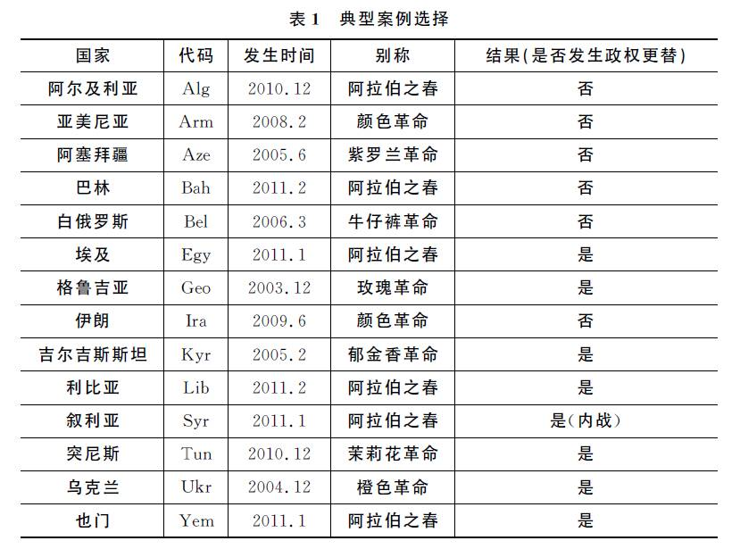
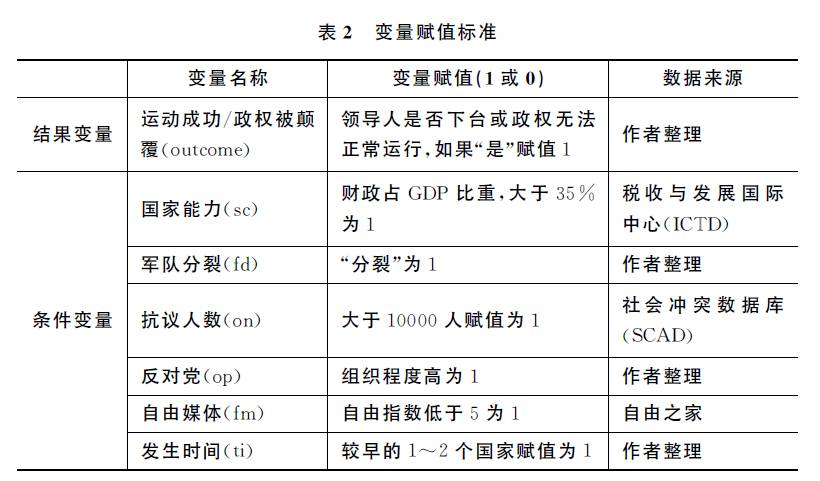
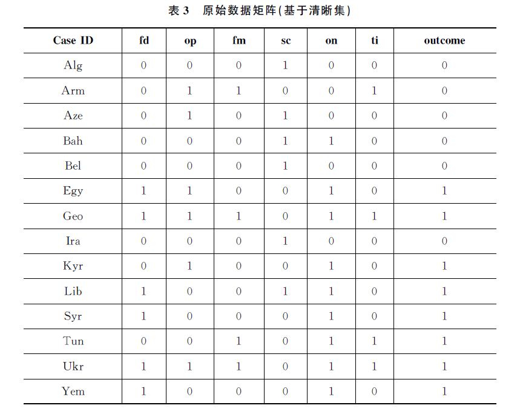
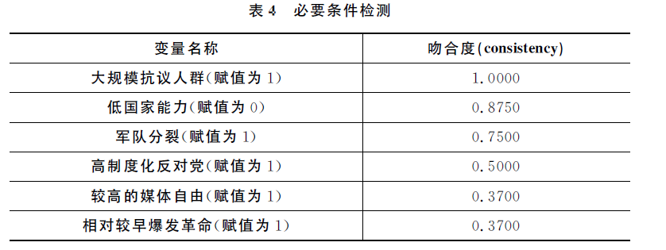
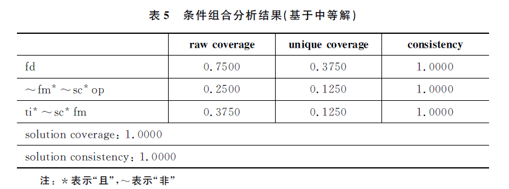
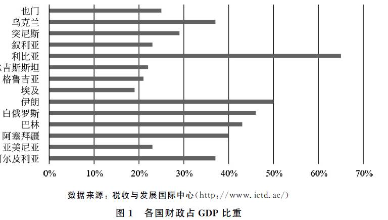
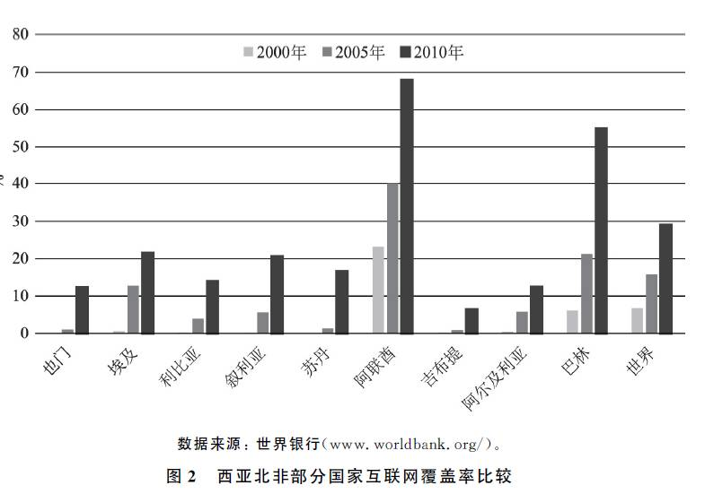

释启鹏、韩冬临：当代社会运动中的政权崩溃 ——“颜色革命”与“阿拉伯之春”的定性比较分析
释启鹏 韩冬临
政文观止Poliview
微信号 zhengwenguanzhi
功能介绍 从一群年轻人的视角出发，专业、专注、专解海内外比较政治经济研究的前沿佳作。
__发表于
作者简介：
释启鹏：中国人民大学国际关系学院政治学系硕博连读研究生，政文观止团队编辑成员
韩冬临：中国人民大学国际关系学院副教授，国家发展与战略研究院研究员
**** **前言
**
政权的稳固与更替素来是比较政治学的重要议题，在此视角下产生了许多经典著作。在政治发展较为完善的国家，政权交替往往可以通过领导人的制度化更迭以较为稳定的方式实现。但在更大的范围与更长的时间内，国家政权更替的形式未必是平和的，动荡与暴力极为常见，其中革命是最为激烈且影响深远的一种。随着和平与发展成为当今时代的主题，各类革命的爆发日渐减少，学者们对该领域的关注也有所消退。然而２１世纪第一个１０年在广大发展中国家爆发的抗争事件，如“颜色革命”与“阿拉伯之春”等一系列社会运动，导致不少国家相继出现政权崩溃，这使我们不得不再次关注政权崩溃这一比较政治学的重大议题。
“颜色革命”与“阿拉伯之春”并非“社会结构与国家政权发生快速而根本改变”的社会革命，而仅仅是改变政治权力关系的政治事件。根据古德温的定义，“革命就是民众用宪法之外的方式或是暴力的手段通过运动推翻国家或政府的事件”。在此意涵内，“颜色革命”与“阿拉伯之春”可以被理解为“革命”。由于传统研究主要聚焦于各种社会运动的“发生学”，而对运动导致的政权更替关注有限，因此本文试图回答这样一个问题：在那些经历了“颜色革命”与“阿拉伯之春”的国家，为什么有的政权遭致颠覆，而有的政权却得以延续。
对此，本文利用“定性比较分析”的方法作为主要分析工具，以在“颜色革命”与“阿拉伯之春”浪潮中发生社会运动的国家为案例，从政权的韧性、反对力量的强弱以及国际影响三个视角进行多重因果分析，从而为新世纪以来的国家政权崩溃提供一个整体性的认识，并通过比较的方法，“在偶然性中发现规律，以此解释特定历史进程和结果”。由于案例数量不及量化研究的最低标准，同时超出了传统密尔法所能操作的范围，因此采用ＱＣＡ的方法，并在此基础上研究政权崩溃的不同路径。文章结构如下：本文分为三大部分，首先第二部分对已有文献进行回顾和总结，在此基础上在第三部分进行案例和变量选择，通过布尔运算得出必要条件与条件组合，第四部分对政权崩溃的三条路径所体现的要素互动与历史进程进行简要论述。
政权 何以 崩溃 ：对既有理论的回顾
社会运动中决定政权命运的因素涉及现有政权的韧性、反对力量的强弱以及国家所处国际环境等方面，下面我们将从这三个维度对已有文献进行简要回顾。
首先是政权自身的韧性。早期研究认为，制度设计决定政治秩序，在林茨等人看来，议会制比总统制更稳定；萨托利认为政体有“向心”“离心”之别。在当今“民主—非民主”的分野下，学者发现威权国家尤其是那些二元君主制国家体现出更强的“韧性”，适度开放的政权因为面对抗议反而更容易走向崩溃。这种思路虽然存在意识形态的偏见，但却将研究路径从单纯的“制度决定论”指向了对国家能力的关注，正如亨廷顿所言，各国之间最重要的政治分野，不在于政府的形式，而在于它们政府的有效程度。丹·斯莱特等人对１３９个国家的分析表明，政权崩溃都体现出“弱国家”的历史渊源，而萨德·邓宁发现，即便同为“食利国家”，资源性财政收入占ＧＤＰ比重的差异也会影响一个国家面对冲击时的应对能力。
在政治系统内部的诸要素中，暴力机构对政权的维系意义重大。巴拉尼认为，当一个国家的武装力量规模小、装备差且经常拖欠工资以及在对外战争中遭受失败时，国家处理政治抗争可能面临困境。进一步讲，在那些以军人绩效为考核依据的国家中，军队临阵倒戈以及发生军事分裂的可能性远远高于依照忠诚网络与世袭制度所建立的军队。特别是对大规模的社会运动而言，在政府当局无法通过和平措施将其平息的情况下，执政者将不得不采用暴力手段进行镇压。如果军队镇压失败，政权崩溃的风险将大大增加。综合来看，如果国家具有制度化程度高的执政党、强有力的官僚机构、强大的经济控制，且与西方联系较弱的话，那么其政权在运动的浪潮中被颠覆的可能性会大大降低。
其次是反对力量的特点。在大部分爆发“颜色革命”的国家，抗争运动大都是由反对党组织实现的，因此一些学者将成败的关键放在了反对派或政治精英的能力，尤其是抗议精英自身的组织动员能力、可动员资本、抗争策略等方面。从长时段来看，苏联时期的历史遗产对反对党的自身建设意义颇大，历史社会学研究表明，政党初创时期的革命与反革命运动对塑造政党的能力具有决定性作用。相反，阿拉伯世界的国家不仅缺乏获得民众支持并进行广泛动员的反对组织，同时缺少预备接掌旧政权的精英联盟，因此新媒体尤其是互联网在其中起到了政治动员的功能，虚拟网络不仅为人们传递信息、进行舆论斗争提供了平台和载体，同时造成了国家动荡、宗派纷争和社会冲突，进而展现出“集群式革命”的景观。在当下的社会动员理论中，社会基础、阶级认同、空间环境、地域特征都受到广泛重视，这些因素都会塑造某次特定的政治运动并导致不同的结果。许多学者认为，在两次革命浪潮中，民间团体与非政府组织赖以生存的公民社会对反对力量具有重要影响，通行理论认为，健全的公民社会为社会与政治运动尤其是为青年运动提供了可能。根据这种观点，学者从反面解释了威权国家的存续，包括工会与商业组织形同虚设、非政府组织与民间团体缺乏赖以生存的土壤、公民缺乏政治参与的渠道、公民文化与民主意识的培养受到极大的阻碍等。
第三种解释路径强调国际视角。当今时代，国家不可避免地受到所处国际环境的影响。列维斯基发现，那些在政治、经济、文化等诸领域与美国或西欧联系密切的国家不利于自身权威的巩固，因为在这种情况下西方更有意愿且有能力插手其国内事务。国际关系研究者认为，独联体国家所爆发的政治运动背后，有着美国等西方国家能源、安全、经济等方面的利益以及“输出民主”的目的；借助宗教、新闻媒体、扶植反对派以及经济援建和培养公民组织等多种途径，阿拉伯世界的社会基础发生了潜移默化的变迁，因此大规模运动的发生与西方国家的渗透有着紧密的联系。另一方面，扩散理论的兴起提供了一种新的视角。正如亨廷顿在《第三波》中提出的“滚雪球”式的扩散模式，研究者发现“阿拉伯之春”与１８４８年爆发于欧洲的革命浪潮有着许多相似之处，包括民众抗议在很短的时间内在整个地区传播，且抗争的最终结果存在明显的差异。他们认为，政治经济的变革导致了思想观念的变化，每一次成功的革命都会产生独特的观念与信念，都可能穿越国境对其他国家的民众产生影响。在政治扩散中，社交媒体的作用举足轻重，那些网络覆盖率高且政府把控程度低的国家的政权更容易在民众的冲击下走向崩溃。扩散的效应是双重的，那些目睹邻国政权被颠覆的统治者们可能会积极吸取经验教训，当本国面临类似威胁时采取有效措施；而在一些国家的民众看来，那些经历了民主化运动的国家除了动荡外并没有给百姓的生活带来实质性改变，因此他们对类似运动反而报有消极甚至抵制的态度。
从方法的角度来看，以往学者对“颜色革命”与“阿拉伯之春”的历史解读通常采取两种取向。一种是采用一般模型在历史中的应用，如集体行动理论、加值理论等，以此对特定的案例进行说明。由于是基于一般理论模型，因此两次运动中的案例都可以借此加以解释。但是，这种研究很大程度上忽视了不同国家的特殊性以及事件的复杂性，与此同时，先于历史叙述存在的高度抽象的理论总是给人一种可信度较低的感觉，且一般理论往往通过对历史材料的选择性叙述以达到理论自洽的目的。另一种取向则聚焦于历史细节，在偶然性中分析历史的规律。由于两次运动浪潮中的政权崩溃尚不足以进行大样本统计分析，因此这类取向的研究大多是通过跨案例比较或案例内分析构建细致的因果推论。但是，有限案例的数量不可避免地带来了代表性不足的问题，且在解释因素与机制的选择上，大部分研究依然停留在单因解释的范畴，即便一些学者努力寻找因果解释的多种因素，却很容易忽视因素间特定的组合以及要素之间的互动。因此，有必要借助定性比较分析方法对大规模社会运动中政权崩溃的路径进行多重因果分析，以此说明不仅导致政权崩溃的因素具有多样性，同时政权崩溃的路径也具有多样性。
三、研究假设与数据分析
跨案例研究必须以比较方法为基础，在比较研究中最为常见的是密尔五法中的求同法与求异法，之后普泽沃斯基与图纳在此基础上建立了最大相似性系统设计与最大差异性系统设计。然而，以密尔法为基础的比较分析只能识别具体结果的某一特定原因，无法判断导致这一现象的多种原因，且在多变量的情况下，传统的密尔法无法精确快速地处理中等规模的案例，这都极大地限制了比较研究的进一步发展。
这种现象在２０世纪８０年代末期发生了变化。１９８７年，查尔斯·拉金出版了影响深远的著作《比较方法：超越定性定量策略》，将布尔代数的逻辑引入比较研究之中。这种被称为“定性比较分析”的方法重视原因组合关系与多重因果路径，实现了对传统密尔法的超越，极大地扩展了案例的容量，在处理定类、定序的数据时具有一定优势，且不易受到自相关与多重共线性的负面影响。３０年来，该方法在国外逐渐走向成熟，而且近年来在国内开始受到关注。ＱＣＡ的逻辑原理与操作方法在一些引介性文献中已有较为详细的说明，在此不再赘述。在本文里我们采取的是“清晰集定性比较分析”的方法。
（一）假设的提出
通过文献回顾我们可以发现，在特定的时空背景下，国家—社会关系的差异导致了政权在面对社会运动时的最终结果。国家—社会关系包括国家性质、社会性质以及国家与社会结合的方式，而特定的时空背景则表现为国家所处地缘政治、国际环境以及革命发生的相对时间。面对可能被颠覆的风险，强国家是保持政权存续的根本保障。从国家自身的视角出发，国家能力要求政权当局拥有雄厚的物质基础，经济发展与财政收入是最基本的体现；而从国家—社会关系的视角出发，国家能力则体现为渗入社会、调节社会关系、提取资源以及采用特定方式配置或运用资源的能力，并进而要求拥有一套深入社会的官僚体制在政治系统中发挥作用，总之，高国家能力可以减少政权被颠覆的可能（假设１）。在政治权力的诸多面向中，深处社会运动中的国家政权对军事实力的掌控尤为重要。韦伯认为，国家是在一定疆域内对暴力的合法垄断，而政权对军事力量的统一领导是实现这一基本职能的重要方式，当一个国家的军队发生分裂时，国家将无法实现暴力垄断这一基本职能，政权走向崩溃在所难免，因此军队分裂会增加政权被颠覆的可能（假设２）。
与国家相对的是社会的性质，尤其是反对势力对政权产生的冲击。反对势力的“质”与“量”，即组织程度以及抗争人数决定了对国家威胁的程度。在“量”的维度，大规模抗议人群会增加政权被颠覆的可能（假设３）。抗议规模与政权崩溃的关系来源于阈值模型中理性选择的视角，该模型认为，个人对成本与收益的感知取决于运动中已参加人员的数量，随着抗议人数的不断增加，政权被颠覆的危险也随之增大。人数的增多具有多重意义：首先，随着大众参与的增加，每个人减少了被镇压的恐惧，坚定了为实现既有目标所采取的行动；其次，国家对大规模平民的镇压会付出极大的成本，因此人数的增加极有可能动摇当局进行镇压的决心；与此同时，人数的增加会吸引国际社会的关注，使得运动的发展更加复杂。在抗议力量“质”的维度，具有高度组织化与制度化的反对党会增加政权被颠覆的可能（假设４）。高度组织化与制度化的反对党更能有效地组织与动员群众，充分利用他们对政局以及具体事件的不满，不断增强抗争团体的内聚力并扩大影响。此外，在政党斗争中发展起来的反对党更懂得斗争策略，能够综合利用国内国际局势。
新世纪以来，互联网等新媒体的出现使社会动员拥有了新的途径。新闻媒体的不同传播形式以及传播的不同内容，都会对社会运动的过程与结果产生影响。在社会运动的过程中，无论是政府还是反对派通过新闻媒体进行有偏向的报道，都会造成有利于自身的舆论环境；而互联网不仅可以将个体进行有机集合，同时也会使得域内社会运动受国际影响的可能性进一步增大，尤其是在公民社会发育不良、政治信息闭塞的国家，互联网发挥的作用更大。因此在这些国家中，政权对媒体的控制极其重要，具有较为独立自由的媒体增加了政权被颠覆的可能（假设５）。以上因素只是基于即时性的研究，运动发展中的时点与时序同样重要。一般而言，较早发生运动的国家由于缺乏经验及应对措施，政权被颠覆的可能性更大；而在之后爆发的运动中，行动者与执政者都是具备“学习”能力的：首先，行动者效仿邻国“革命”的成功而纷纷上街，因此“革命”以浪潮的形式在特定地域内接连爆发；但另一方面，行动者的盲目性导致缺乏动员与组织基础，而政府则从邻国政权崩溃的教训中吸取了经验，在处理危机时手段更加成熟稳健，这使政权被颠覆的可能性降低。因此，时间的先后顺序对国家政权是否容易被颠覆存在影响（假设６）。
（二）案例选择与变量赋值
案例的选取以概念界定为前提。“阿拉伯之春”主要指在西亚北非地区以突尼斯的抗争冲突，其时空限定较好确认。对于“颜色革命”，在已有的文献中最早可以追溯到葡萄牙１９７４年爆发的“康乃馨革命”以及１９８６年在菲律宾爆发的“人民力量革命”，这个定义把所有针对国家政权的非暴力示威都囊括其中，却很可能出现萨托利所谓“概念延展”的危险，因此我们对“颜色革命”的时空限制为２１世纪后的原苏东国家。本文选取了１４个典型案例，其中伊朗的案例为２００９年时任总统内贾德谋求连任时遭遇的抗议活动，属于“非典型”的“颜色革命”，也包含在我们的案例之内。具体的案例选择参见表１。

根据上文所作的６个假设，我们将国家能力、军队、抗议人数、反对党、媒体以及发生时间等６个因素作为条件变量，并将其与结果变量（政权崩溃）进行布尔赋值。赋值中采用最简单的定类数据，以客观发生的“是（＝１）”或“否（＝０）”来衡量，如我们选择的结果变量，即以是否发生领导人更替为标准。①但是此类数据毕竟是少数，在大部分的赋值过程中，赋值的主观性为研究者所诟病，因此我们需要尽量使用客观数据作为衡量概念的依据。在变量中，结果变量以及条件变量中的军队分裂、反对党和时间的先后顺序皆由作者整理；自由媒体这一变量采用“自由之家”的指数，该指标认为５．５以上即为“不自由”，因此笔者认为得分５以上即可体现政府对包括媒体在内的社会具有较强限制；国家能力以财政收入占ＧＤＰ比重作为测量标准，数据来源是“税收与发展国际中心”数据库；抗议的人数来自“社会冲突”数据库，其中大于１万人的赋值为１。具体的赋值方法参见表２。

我们对变量的选取进行简要说明：（１）由于本文试图解释政权崩溃，即聚焦于革命的成败而非革命是否爆发，因此那些立足社会／政治运动发生学的传统解释———诸如发展水平、经济形势、政治环境等因素被排除在外；（２）笔者认为政体划分的类型学不利于发掘政治发展的真实逻辑，因此没有把以国家权力结构（总统—议会制）或是以ＰｏｌｉｔｙⅣ指数（民主—非民主）为依据的政体类型作为影响成败的因素；（３）我们承认社会结构与文化特性无论是在运动爆发还是在政权的更替中都会发生重要的作用，但结构性因素需通过中介变量发挥作用，而我们考虑的是因果关系中的“基础层”变量，而且它们在跨案例比较中很难度量，因此这些变量也暂不考虑。
在对案例选择与变量进行赋值之后，我们可以建立原始数据矩阵，如表３所示。

（三）必要条件与条件组合
原始数据矩阵建立后，我们可以通过ＱＣＡ软件进行真值表建立，并进行必要条件检测与条件组合运算。表４显示的是必要条件的检测。

一般认为，当某一条件的吻合度达到０．９以上，则可以将该条件看作结果的必要条件。在我们的必要条件检测中，变量ｏｎ即大规模的抗议人数其吻合度达到１，可以看作政权崩溃的必要条件，而变量～ｓｃ即低国家能力吻合度达到０．８７５，也可以近似地看作导致政权崩溃的必要条件。
理性选择的模型为革命成功提供了一定的解释，但在全样本解释中面临一些困境。首先，既然每个个体的“阈值”不同，那么达到大规模抗议人群的人数临界值是多少？由于理想选择是基于心理预期的，因此在实际过程中很难测量。其次，规模壮大的抗议人群不仅仅是基于理性选择的结果，阶级与阶级联盟等结构性因素在其中也会发挥至关重要的作用。同时，在人数规模相似的情况下，不同国家镇压的态度也存在明显的差异。因此，大规模抗议人群只是政权崩溃的必要条件。接下来需要进行真值表的布尔运算，观察大规模抗议人群是如何与其他因素结合进而导致了不同的因果路径的。在ＱＣＡ的运算中，如果存在必要条件，操作者首先需将其暂时排除后再进行布尔化简。表５显示的是条件组合分析的结果。

此处我们采取基于中等解的原因条件组合，这是因为中等解既能通过逻辑余项的加入对未发生的事件进行合理假设，同时符合已发生案例的事实。加入必要条件后，“颜色革命”与“阿拉伯之春”中的政权崩溃体现出三条路径：（１）军队分裂＊大规模抗议人群；（２）低国家能力＊高媒体控制＊高度组织的反对党＊大规模抗议人群；（３）低国家能力＊大规模抗议人群＊早发革命国家＊低媒体控制。在此结果中，每条路径的吻合度以及解的吻合度均为１，这说明每条路径均作为其结果的充分条件，且两条原因组合作为一个整体同样作为结果的充分条件。在覆盖度方面，总覆盖率为１，说明给出的条件组合可以解释所有的案例；各初步覆盖度表示了三条路径所能覆盖的案例，各条路径中的净覆盖度均低于其初步覆盖度，说明存在符合多条因果路径的正面案例。综上，在吻合度与覆盖率两个维度上，我们的计算结果可以通过稳健性检验。
四、政权崩溃的路径分析
根据ＱＣＡ的运算结果，我们发现了三条导致政权崩溃的路径，下面我们以各条路径的代表国家为中轴进行比较历史分析，进一步观察不同的条件组合在运动的成败中是如何发挥作用的。
（一）军队分裂与政权崩溃
第一条路径可以覆盖７５％的案例，突显了军队在维护国家政权中的作用。有关军队以及军队分裂在政权存续中的分析，有两种竞争性的解释值得注意。首先，许多人认为军队的能力对维持政权存续有重要作用，而军费开支显然是衡量军队能力的核心指标，因此军费支出高昂的国家往往具有更高的抵抗危机的能力；其次，有学者认为军队的分裂是受到抗议人数影响的，其理由是面对大规模的抗议人群，军队的贸然镇压会面临自身合法性丧失以及威望受损等多重风险，因此基于理性选择理论，许多军队成员在这种情形下会选择抵抗统治者的命令，由此导致的军队分裂进而导致了政权崩溃。
通过简单的数据比较我们发现，在发生“颜色革命”与“阿拉伯之春”运动的国家中，军费开支与政权崩溃并不存在相关性；而巴林等国家对大规模抗议人群的镇压表明，抗议人群并不必然导致军队分裂进而导致政权崩溃。第二种竞争性解释同时具备了“大规模抗议人群”与“军队分裂”两个变量，但事实上却是与ＱＣＡ的逻辑相违背的。在ＱＣＡ的条件组合中，军队分裂与大规模抗议人群是两个相互独立的变量，军队分裂是作为ＩＮＵＳ条件存在的，二者的交集构成了政权崩溃的充分条件，即Ａ＊Ｂ→Ｙ模式，然而第二种竞争性解释中两个变量在时间与因果关系上体现为递进关系，即Ａ→Ｂ→Ｙ，在这种情况下，大规模抗议人群成了政权崩溃的充分条件。在因素选择中，区分这两种因果模式对我们作出科学判断具有重要意义。
本文提到的军队分裂，并非作为革命结果的分裂，而是在某国系统内部具有的结构性分裂，这在很大程度上体现了社会分裂的现实，同时与军队自身的组织结构相关。在那些科层制的军队系统中，军人的升迁主要依靠的是个人表现与工作业绩，因此他们对特定政权的依附程度较低。然而在那些以血缘、宗族、教派为基础的军队系统中，军人的晋升主要取决于非绩效性成分。因此在这种情况下军队与政权有着很强烈的联系，现有政权的崩溃会导致他们的既得利益荡然无存。因此，军队针对民众，他们最关注的是抗议浪潮会不会危及已有统治。当统治者下达镇压命令之后，军队成员会为了维护自己的既有利益而进行镇压。
同时，军队并不是统一的整体，上层军官和下层士兵在利益偏好上可能存在很大不同。在叙利亚，大约有７５％的人口属于逊尼派，而大约有１１％的人口属于阿拉维派，占人口少数的阿拉维派在军队系统中占据统治地位，广大的逊尼派人员则主要是底层军官和士兵。面对阿萨德武力镇压的命令，与现有政权有着密切联系的高级军官们毫不犹豫地执行了这项决定，但在落实方面却在某些地方受到了逊尼派士兵的抵制。对国家效忠必然要对自己教派的同胞开枪，这需要付出极大的道德成本，因此当抗议不断深入时，越来越多的士兵选择拒绝服从或是临阵脱逃。与此同时，革命冲击下政权的持续脆弱以及军营内不断弱化的监控能力，使得士兵的出逃更加容易。当越来越多的叛逃者加入了战斗，武装斗争的呼声逐渐淹没了非暴力抗议，阿萨德进而也把打击“自由叙利亚军”作为进一步实施镇压的理由，叙利亚的暴力逐渐升级，国家陷入内战之中。
军队的分裂不仅可能源于层级间偏好的分歧，同样可能来自于横向差异。在利比亚，军队的结构建立在部族的结构基础之上，因此当某些部落抗议卡扎菲政权时，军队内部也发生了分裂。在也门，军队的分裂则体现在高级军官的叛变与倒戈上。在军队系统内部，那些受惠于总统萨利赫的高级军官依旧忠于现有政权，而那些处于权力边缘的军官则选择了叛变，如萨利赫的兄弟、第一装甲师师长兼西北军区司令艾哈迈尔明确表示支持反对派。由于也门士兵在经济上高度依赖其军事单位尤其是高级指挥人员，因此军事首长的叛变意味着整支军队的叛变。在也门，普通士兵每月仅有１００～１５０美元的固定收入，这仅够勉强维持一个人的基本生活，而国家对不同军队的支出具有极大的差别，相较于大部分野战军，那些靠近总统的精锐部队可以获得极其丰厚的资金支持。由于艾哈迈尔为自己士兵持续支付超过固定收入的高额报酬，故而在也门军事体系中第一装甲师已经成了艾哈迈尔的私人武装。
同样面对大规模的抗议人群以及教派的分立，巴林对示威民众的强力镇压使政权避免了崩溃。巴林的示威游行最开始并非旨在推翻现有政权，而是以什叶派为主的民众想要获取更多的平等权利。巴林的军队主要是逊尼派成员，而逊尼派在巴林境内的总人口中仅占３０％左右，如果抗议者成功将政权推翻，那么以什叶派为主导的新政权必然对逊尼派进行大规模清洗。因此当骚乱发生时，巴林武装力量的高级指挥官们一致认为，维护哈里发的统治秩序而非建立一个新政权更加符合他们的需要。包括总司令、总参谋长以及皇家卫队指挥官在内的多名军队主要首脑都是哈里发家族的成员，尽管巴林爆发的示威游行并没有涉及军队领域的改革，然而政权的变更或者重大的改革都会威胁其核心利益。军队不会因革命成功得到好处，反而会失去由于教派的地位而获得的特权。
相较于叙利亚军队中下层士兵的叛变，巴林的下层军官和士兵最终选择了对哈里发政权的效忠，这与军队的结构和管理制度也有着深刻的联系。巴林的武装力量存在一部分来自阿曼、也门等多个国家的雇佣军，他们拥有可观的收入与免费的住房，许多不在本地出生的士兵可以获得公民资格。然而抗议者明确提出了废除雇佣军制度，这使他们为了避免失去工作而选择效忠现有政权。
巴林的普通士兵在社会地位与工资水平方面处于普通水平，他们对现有政权的维护并不会对自己产生多大的益处。然而巴林已在军队中建立了一套结构完善、组织森严的监控和惩戒网络。当局将各种国籍的士兵进行混编，尽可能减少本土的巴林士兵进行叛变串联的可能性。与此同时，不同于叙利亚拥有较为广阔的土地和邻国能够为叛逃者提供较多的躲藏之地，巴林土地狭小且四面环海，这无疑也增加了士兵叛逃的成本。由此我们发现，不仅导致政权崩溃存在多种路径，即便某一特定因素所体现的差异性背后也蕴含着多种因果机制。
（二）弱国家的政治抗争
第二条路径表明，革命浪潮中那些国家能力弱小而媒体管控相对严格的国家，在面对反对党组织下的大规模抗议人群时，国家政权更容易被颠覆。亨廷顿认为，社会革命与动荡，“在很大程度上是社会急剧变革、新的社会集团被迅速动员起来卷入政治，而同时政治体制的发展却又步伐缓慢所造成的”。而蒂利认为，只有当有组织的抗争者出现，且大众为他们所动员起来以对抗政府，现代化虽然可以制造抗争者，然而不一定会使他们的革命成功。本文的第二、第三条路径同样证明了社会动员对革命成功的意义。不同于那些革命较早发生且民众可以通过限制较低的媒体进行广泛动员，本路径中较低的媒体自由度削弱了大众通过互联网等渠道进行大众动员的可能，而高度组织化的反对党承担起了这项责任。因此，这条路径在多党制存在的独联体国家中比较突出。
第二、第三条路径同时强调国家能力的作用。在国家能力的诸多面向中，作为基础性权力的汲取能力无疑是最为重要的。基础性权力即一个中央国家的制度能力，是一种“贯穿”社会的“权力”，它通过国家基础来协调社会生活。在对基础性权力的衡量过程中，国家财政收入是一个重要的操作化指标，因为国家从它所控制的人口中筹集资金的能力是其能力的核心要素，也是几乎所有国家进行国家建设的基本推动力。财政收入是一个国家经济水平发展与国家实力的缩影，图１显示了我们选取的１４个案例中税收占ＧＤＰ的比重。很明显，在两次革命浪潮中那些政权最终得以存续的国家的财政占ＧＤＰ的比率绝大数都超过了３５％；而在国家政权被颠覆的案例中，除了叙利亚和乌克兰比值较高，其余的都在２０％的水平徘徊。

第二条路径覆盖埃及与吉尔吉斯斯坦两个案例，其中埃及既符合第一条路径又符合第二条路径，因此我们以吉尔吉斯斯坦２００５年爆发的“郁金香革命”作为主轴与其他国家进行比较。有学者通过比较发现，除吉尔吉斯斯坦之外，那些“颜色革命”成功的国家的时任政府都无力或不愿对抗议者进行镇压。因此当吉尔吉斯斯坦执政者面临社会抗争时，即便当局试图对抗议者采取镇压等措施，但软弱的国家在面对高度组织化的反对党所动员的大规模抗议人群时，却显得无能为力，于是发生了反对派占领政府大楼这样的事件。
国家对社会的汲取以一定的经济基础作为保障。从国家的资源禀赋来看，吉尔吉斯斯坦虽有一定的矿产（主要是稀有金属）和水利资源，但与哈萨克斯坦、土库曼斯坦等国家相比，缺乏可以带来巨大外汇的油气资源。根据世界银行的数据，吉尔吉斯斯坦自独立至“郁金香革命”爆发的十余年间，近乎一半的时间经济都处于负增长阶段，１９９４年的经济负增长率高达２０％，直到２００４年其国内生产总值依旧未能恢复到独立之前的水平。国家能力还体现为对重要资源的把持，在白俄罗斯、塔吉克斯坦和乌兹别克斯坦，执政者通过对自由化市场的抵制使国家在经济生活中占据着独一无二的地位。以白俄罗斯为例，政府控制了整个国家８０％的经济份额，俄罗斯的天然气援助避免了经济危机爆发的可能。反观吉尔吉斯斯坦，从生产主体来看，其经济发展主要以大企业为支撑，但作为第一个加入世贸组织的中亚国家，众多原国有资产纷纷流失，私营总产值占工业总产值９０％以上，如该国最大的矿产开发公司库姆托尔公司即为卡梅克集团所控制。
在政治的发展过程中，时任总统阿卡耶夫由于自身执政经验的缺乏及过度乐观的执政理论，对反对势力的扩张起到了推波助澜的作用。吉尔吉斯斯坦独立之初就被西方国家赞为独联体国家中的“民主岛”，阿卡耶夫打着“自由”“民主”的旗号进行彻底的西化改革，他非常推崇弗里德曼等经济学家主张的彻底私有化。１９９９年通过的《政党法》加剧了政党的分化与组合，政党间的联合不断增强。市场资本与多党制的政治改革为多元的政治力量提供了发展空间，反对派力量可以受到来自国内商界的支持，或是直接受惠于经济阶层保持中立。２００２年３月，在吉爆发的“阿克萨区流血事件”中，反对派就提出了总统下台、修改宪法、进行政治改革的主张。８月２６日，阿卡耶夫决定修改宪法，新宪法中总统权力被削弱。外界观察认为，这次修宪“是反对派的一次胜利”，反对派在不断的抗议活动中积累经验，同时其实力与组织能力进一步提升。
后发国家的国家能力往往与执政党的能力联系在一起。在独联体国家的政党发展历程中，苏联解体后各国的多党制是被“制造”的而非“生成”的，缺乏长时段的革命与反革命斗争，各国政党缺乏执政能力建设，政党政治在党争民主的浪潮下大多体现为碎片化的特征。例如在格鲁吉亚，总统谢尔瓦德纳泽虽然成功建立了单一政党“公民联盟”（ＣＵＧ），但是由于缺乏强有力的意识形态维系，而且该政党仅仅作为支持谢尔瓦德纳泽进行选举的工具，因此当总统支持率走低时，他的昔日盟友便纷纷出走并领导了２００３年的“玫瑰革命”，而“公民联盟”则早在２００１年就宣告解体。谢尔瓦德纳泽本人在“玫瑰革命”的抗议浪潮下不得不宣布辞职。“玫瑰革命”的成功可以归结于面对大规模的抗议人群，军方拒绝执行总统下达的紧急状态命令，即第一条路径的解释；同时我们也发现，政权崩溃与革命爆发的相对时间也有一定的关联。
（三）时间中的政权崩溃
第三条路径试图说明，在那些媒体相对自由的国家，偶发事件以及外部渗透可以通过这些自由的媒介进行广泛动员，而由于缺乏相应的应对措施，低国家能力无法对抗大规模的抗议人群，最终导致政权崩溃。
在本条路径中，为学者们所广泛强调的新媒体因素得以发挥作用。学界普遍认为，以Twitter，Facebook为代表的新兴社交媒体在集体抗争中发挥着联系、组织与动员的作用。我们选取了10个位于西亚北非的国家进行比较，它们都一定程度上受到了2011年爆发的“阿拉伯之春”的影响。其中有的国家在大众抗议中政权遭致崩溃（埃及、利比亚），有的陷入持久的内战（叙利亚），有的虽反应剧烈却最终被镇压（巴林），而有的受影响程度则较低（吉布提、阿联酋）。通过图２可以看出，在发生了革命且遭遇政权崩溃的也门、埃及、利比亚、叙利亚等国家，其革命爆发时期的人均网络覆盖率远不及政权得以存续的巴林。在“阿拉伯之春”中受影响较小的阿联酋，2000年其人均网络覆盖率已经超过了2010年的也门等国家。互联网覆盖率并不是导致政权崩溃的主要因素，况且大多数社会运动都离不开传统意义上的组织、社会网络和空间环境，互联网在动员中只是起到辅助性的作用。

我们在因素选择中将国家对媒体的控制程度即新媒体的自由度作为导致政权崩溃的假设条件。阿拉伯世界国家通过高速的经济发展使得本国互联网覆盖率得以迅速提升，但如果国家对各种媒体都进行有效监控，抗议者就无法通过社交媒体进行动员，境外势力也难以通过国际互联网进行渗透。而在“颜色革命”爆发的国家，反对派可以通过不受政府限制的媒体报刊进行舆论造势。例如在乌克兰和格鲁吉亚，发行范围和规模不一的“独立”媒体超过１０００家，这极大地扩大了反对党对社会的影响。
比较政治的核心信条是“环境很重要”。所谓“环境”具有诸多面向，包括结构的、文化的、制度的和策略的，社会的、经济的以及政治的，国际的、国内的还有当地的，等等。因此，运动中政权的命运是特定时空背景下多种因素共同作用的结果。突尼斯是本条路径中革命成功的代表，其政权崩溃至少涉及ＱＣＡ运算结果中４个因素的共同作用：首先，突尼斯长期存在的高失业率与高度腐败导致了民众的潜在不满，作为革命导火索的小贩自焚引起民众不满的大规模爆发，而事件本身存在很大的偶然性与非预期性，政府缺乏相似事件的应对措施；其次，突尼斯近１０年来互联网覆盖率极大提高，而政府对该领域又缺乏有效管控，这使得革命爆发后民众可以通过互联网实现大众动员，一定程度上增加了反对力量的规模水平与组织程度；再次，虽然本·阿里５次连任总统而被批评为独裁统治，但其权力属性主要体现为专制性权力而非基础性权力，国家能力的汲取能力、渗透能力、调控能力存在问题，政府无法对大规模抗议采取果断的措施；同时突尼斯属于现代化程度较高的世俗社会，各种力量之间的分歧与冲突较为有限，因此反对独裁者的抗议运动得到了广泛的支持。
不仅媒体发挥作用需要特定的时空背景，革命爆发所处的时间位置也十分重要。我们引入革命爆发的相对时间这一要素，试图印证“序列中的事件发生的时间影响其发生的方式”②及其结果。通过历史回顾我们可以发现，那些较早爆发革命的国家其政权易遭受崩溃，而那些较晚爆发革命的国家其革命的结果却存在很大的差异，这种差异甚至在地理位置相邻、社会环境相似的国家之间也会存在。
作为“阿拉伯之春”的起点，本·阿里的下台具有很大的偶然性与特殊性，但这一事件可以作为象征符号的流行观念在阿拉伯世界广泛传播。扩散理论的研究者以认知心理学为基础，强调受特定事件引起的可行性以及代表性的启发，该理论的核心是新观念的形成与习得。在独联体国家，由于受到格鲁吉亚与乌克兰“颜色革命”的启发，众多国家的反对党纷纷把大选作为“机会之窗”实施反政府抗议。不同于独联体国家在苏联解体后不仅形成了多元的政党体制，同时还为民主抗争积累了一定的经验，长期以来阿拉伯世界的统治模式极大地压制了有组织的政党的发展。在缺乏组织化领导的情况下，上街向现有领导者进行抗议在结果上的巨大不确定性，以及民众政治运动经验的缺乏，会使得他们在更大程度上依赖于我们前文所提到的认知程度。本·阿里政权的土崩瓦解作为代表性事件为阿拉伯世界的民众提供了可行性的启发，他们相信如果采取相似的抗议活动也会将本国长期执政的领导人赶下台。因此，“阿拉伯之春”在短短的几个月之内席卷了整个西亚北非。
然而无论是反对党还是民众基于有限理性所采取的行动，往往都忽视了“样本国家”运动成功的特殊性。国家的政权性质、文武关系、社会结构、反对力量以及外界的干预，都会对所谓“革命”的成败产生决定性的影响。那些利用选举试图改变执政当局的反对党很快会发现，面对强有力的国家机器以及有坚定执行力的军队系统，其诸多努力所发挥的影响十分有限，甚至突如其来的恶劣天气也会使运动的效果大打折扣。现实情况在“阿拉伯之春”中同样复杂，不仅军队系统、国家能力、媒体自由程度等方面的差异会导致对政权冲击的程度不同，部族、宗教以及地域的分裂也可能影响抗议者对执政者行动的统一性，地缘政治引发的国际干预同样会对革命成败造成影响。
同时，反政府民众抗议的扩散，不仅会激起反对派与民众发动革命的热情，也会促使区域内国家加强防范。面对“颜色革命”的威胁，白俄罗斯总统卢卡申科强硬声明，任何试图推翻现有政权的政变都会受到严厉制裁。为了防止格鲁吉亚和乌克兰事件重演，白俄罗斯当局先后对《政党法》《社会团体法》《刑法》等进行了修改和完善，同时制定了旨在防止暴力抗争的《反极端行为法》等法律，并取缔了一些非法组织，规定任何团体和个人以及政党组织只有经国家有关机构批准才能接受国外资金的援助。这些措施都极大地避免了“颜色革命”的重演。
为了防止“阿拉伯之春”在君主国家的肆意蔓延，海湾合作委员会授意沙特军队对巴林的骚乱进行镇压，这种区域内的干预是在类似事件相继爆发后所作出的判断，因此革命发生时序中相对靠后的国家拥有更多的抵御风险的时间与经验。当然，并不是所有的防治措施都有效。在埃及，面对席卷而来的抗争，穆巴拉克在革命爆发之初也试图关闭全国的网络系统以防止大规模的动员与国外渗透，但这并没有避免政权崩溃的厄运。从一定程度而言，埃及政府的这种消极的临时应对更让抗议的人群不再信任政府，舆论失守导致政局的动荡加剧，反而使得抗议人群和反对派取得了阶段性胜利。
结语
通过对１４个爆发“颜色革命”与“阿拉伯之春”的国家进行ＱＣＡ，本文揭示了社会运动中导致政权崩溃的三种条件组合：第一种是同时具备大规模抗议人群与军队分裂两个条件，第二种是同时具备大规模抗议人群、低自由度的媒体、低国家能力、高度组织与制度化的反对党四个条件，第三种是同时具备大规模抗议人群、高自由度的媒体、低国家能力以及较早爆发社会运动四个条件。这三条路径为我们进一步理解当代世界比较政治研究中政权的崩溃提供了新的认识。ＱＣＡ中路径的覆盖度也印证了笔者所偏向的结构性视角，军队分裂以及背后的社会分裂因素覆盖了大部分的案例，这表明成功的社会运动的确是“发生”的；而后两条路径中反对力量以及观念扩散下的大众动员表明，政权崩溃同样需要被“制造”。也就是说，大规模的抗议人群无疑都是政权崩溃的原因，但是导致政权崩溃的条件组合完全不同。
同时，对政权颠覆的因果分析可以为国家长治久安提供诸多启发性的思考和建议。其中最重要的一条在于，政权需要不断加强自身建设，特别在那些遵循政党中心主义现代化模式的国家，执政党执政能力的建设尤为重要。只有不断增强自身的执政能力，才能应对各种复杂环境以及反对势力的挑战。执政能力，既包含了对暴力机器特别是军队的统一领导，也包含了税收与财政等国家基础能力建设。许多案例表明，军队分裂和低国家能力都是政权走向崩溃的原因。其次，必须辩证地分析媒体和互联网管控对政权崩溃的影响。路径二和路径三表明，媒体自由程度并不是政权崩溃的直接原因，媒体自由度还需要和其他一系列因素组合在一起，才能对政权造成威胁。即使媒体自由度很低，如果与其他因素结合，仍然有可能造成国家的崩溃。最后，必须将社会组织纳入国家的制度化体系中，特别是防止外国势力通过社会组织扩大反对势力。在当代比较政治研究中，“颜色革命”与“阿拉伯之春”中政权崩溃的机制研究，以及那些来自历史的长时段影响，都值得我们进一步探索。
**
**
预览时标签不可点
个
上一篇 下一篇
微信扫一扫
关注该公众号
微信扫一扫
使用小程序
： ， 。 视频 小程序 赞 ，轻点两下取消赞 在看 ，轻点两下取消在看